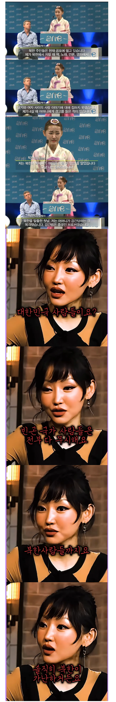
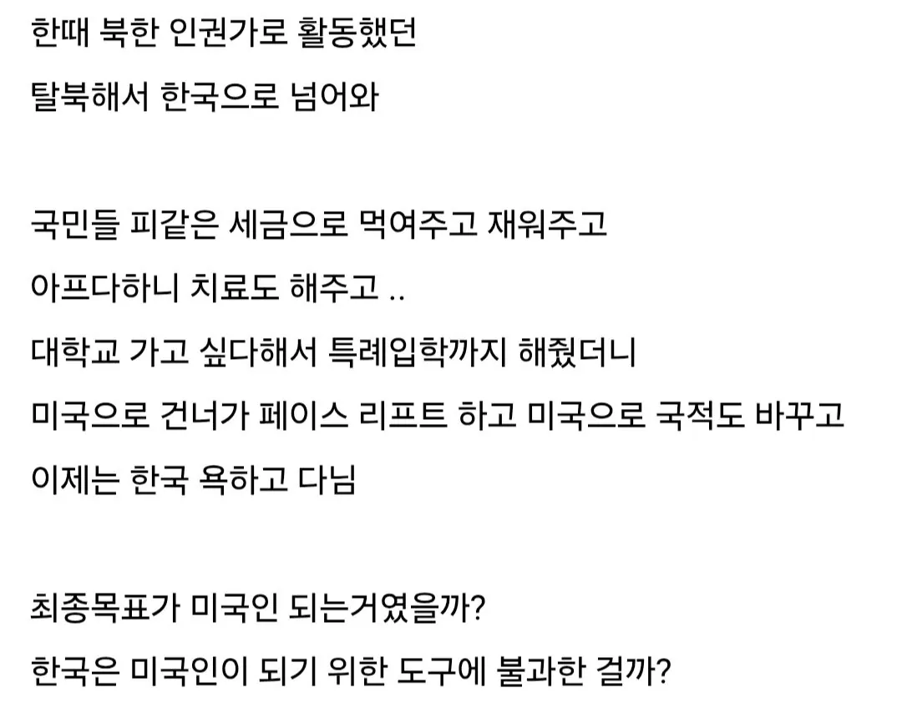

우욱 씹


우욱 씹
ㄹㅇ 안받아줬으면 좋겠음 중국으로 꺼지던가
안받으주면 이슬람 난민 받아줘야함
??
감사함을 잘 표현하고 한국사회에 잘 동화되려고 하는 사람도 많다
탈북민이 한 해에 몇인데 넌 그 사람들 다 만나고 해봤음? 직접 본 적도 없는 새끼가 ㅋㅋㅋㅋ
진짜속이다뻥 좀 내려오지말고 꺼져
온리팬스 언제 진출하냐
한때 북한 사람들에 대해 관심이 생겨서 영상 여러개 챙겨봤는데
북한에서 탈북한 케이스들 보면 극단적으로 빈곤에 시달려서 탈북한 케이스도 있지만
범죄를 저질러서 도피성으로 탈북하는 케이스, 상류층에 속해있다가 줄 잘못타서 나가리되서 탈북한 케이스
중국 국경지역에서 장사하면서 그럭저럭 먹고 살만하게 살다가 탈북한 케이스, 학자로서 진리를 탐구하다 깨달음을 얻어 탈북한 케이스 정말 다양함
이런저런 보면서 느낀게 좋은 사람도 분명 있는데 나쁜사람도 많음 특히나 인권이 없는 곳인데 뭘 배웠겠음
국제 정세와 헌법과 여러 이유에 의해서 그들을 포용하곤 있지만 북한 사람이라고 무조건적으로 불쌍하게 볼 이유는 없다고봄
아마 저런류의 사람이 일제 시대에 있었으면 기회주의자여서 민족반역 짓 했겠지 싶음
ㅋㅋㅋ 그 누구야 국경선으로 돌진해서 총 맞고 탈북해서 자유의 투사니 뭐니 빨아주던 사람 있잖아.
알고보니 북한에서 음주교통사고 내서 도망친 거였고, 여기서도 음주운전 걸려서 방송 다 짤림.
ㅇㅇ 맞음 ㅋㅋㅋㅋ
기본적으로 범죄가 통용되는 국가에서 중학생~노인 이 나이대의 사람들은 이미 그곳의 생활에 절여져 있어서
범죄에 대해서 아무렇지 않게 생각할 가능성이 큼 아무리 우리나라 교육 시설에서 말을 배우고 사상을 새로 덮어쓰기 해도 경험을 덮어쓰기란 힘든거임 거기선 지나가다 여자 겁탈해도 문제없고 남에 빈집 빼앗아도 문제없고 군경들이 시민 약탈해도 문제가 없고 문제 생기면 돈찔러주면 넘어가는 그런 나라였으니
특히 탈북민들 여럿 모여 방송하는 것만봐도 거기서 북한사람들 살기위해서 남에것 훔치는 것 정도는 다 해봤을거라고 합리화 하는데 아무도 부정하진 않더라 암묵적으로 긍정하는 느낌이더라
물론 살기위해서 그럴수도있긴한데 충분히 배고프면 그럴수도있긴한데 죄의식이 없다고 해야할까? 그런 느낌임
ㅋㅋㅋㅋ일제까지 처나오는게 좀 역겹네
왜냐면 저분이 전형적인 기회주의자적 선택을 했기 때문이죠
일제는 이해를 돕기위한 비유일뿐이지 뭐 이완용도 결말이 친일이었지 원래는 조선 왕족에게도 붙어먹어보려고했고 중간에는 러시아에도 붙어먹으려고 시도 했었음 그야말로 기회주의자였음 그런 사람들은 자기 환경에 따라 요기 붙어 먹고 저리 붙어먹고 욕쳐먹을수밖에 없는 사람들임
그리 일제가 불편하면 조선족을 비유를 들수도있습니다 ㅋㅋㅋ
북한물을 빼고 광내도 눈빛에 남아있네.. 지혜가 깃들 기회를 박탈당한 거겠지
처세 ㅈ된다
미국인하고 결혼해서 독수리되고 바로 이혼했네 ㄷㄷ
와 테크트리 제대로 올렸네 ㅋㅋㅋㅋㅋㅋ
인생계획 60살까지 짜놨을듯
와 ㅋㅋ 엄청 싸패 테크트리 같네
미국에서도 유명한 씨발련임 ㅋㅋㅋㅋ
쟤 포힘해서 몇명이 개짓거리해서 탈북민 지원금 4000만원 없어지게 만든 장본인 중 하나 ㅋㅋ
그야말로 사회악이네
나머지가 더 가관임
4000만원 줬더니 탈북민등 향우회 같이 모임이 있음
거기 리더격 되는 년놈들이 그돈 받은 탈북민 속여서 다단계 끌고가서 다 탕진 시키는 짓거리 때문에 없어진게 더 큰 원인
놀랍다 놀라워
탈북자는 누구보다 본인 사회에 불만을 갖고 규칙을 어기며 반항한 사람들이란걸 잊지 말아야함
저런애들 보면 관상도 과학인가 싶음
탈출 스토리가 매번 바뀐다는 그분
탈북자도 결국 남한와서 차별받으니까...비뚤어질수도
현재까지는 탈북자는 한국와서 고마운 감정이나 북한에서 얻지 못할 것들을 받아서 이득봐서 행복하다고 할사람 밖에 없음 대부분은 차별? 되려 긍정적으로 보는 사람이 많음 말도 통해 아직까진 같은 뿌리 민족이라는게 남아 있어서 매체를 통해서 긍정적으로 받아들이게끔 한 탓도 있고
내가볼땐 이사람들이 지금은 소수라 통제가 되는데
탈북민도 늘어나고 여기와서 정착한 탈북민 2세3세들 교육이 어떻게되느냐에 따라서 앞으로 미래가 정해질것 같음
차별 안하고 같이 잘 살고싶기야하겠지만 어릴때 넘어온 사람들은 몰라도 커서 넘어온 사람들은 자기 고향 생각하며 북한 체제가 몸으로 습득한 것들이 있다보니 민주주의 특성상 어떤 사상이든지 외칠수는 있으니까 잘못된 방향으로 엄한 조직에 포섭당해 교육당하면 그런 사람이 두각을 나타났는데 탈북민 출신 사람이라고 알려지고 그게 일반화 되고 차별이 시작될수도 있지 않을까 생각함 안그랬으면 좋겠지만
와...처세술 좆되네...독하다는게 저런거구나
탈북자들 생각하면 참 애매함
반공사상이 강할 수 밖에 없는건 알겠는데 한국 와서 일베함
일베를 한다는게 지역감정 조장하고 지역 혐오 발언하는게 아니라
걍 북한에 대해 강하게 적대성 발언한다는거 아님?
아니 북한이 대한민국한테도 주적단체인 상황에서 북한 정권 혐오하면 안되는거냐?
북한에 있던 사람도 북한 정권 욕하는데
인권 좋아하는 사람들이 왜 북한 인권엔 흐린눈하고
북한이 허구헌날 도발해도 눈감고 도와주려고 하지
시대가 바뀌긴 했네
코로나전쯤만 해도
이 탈북자 신뢰성이 너무 떨어지고 허언증 환자로 보는게 정설이라니깐 자칭 애국보수형님들이 빨갱이로 몰아갔는데
정은아 저런건 앰살해도 괜찮아
traitor
맞말이지 ㅋㅋㅋ 동남아들 못산다고 개무시하는거 맞지
기회주의자 최종진화
맞긴해 베트남 배그 프로였나 그 게시글 댓글가보면 전부 베트남 후진국어쩌구하면서 까고있는게 대부분이니ㅋㅋ
아색기래 공화국 출신으로서 미제자본주의에 스며들어서 간첩활동 하라니께는 잘하고있구나야
박쥐
근데 뭐 없는 말도 아니라.. 그렇다고 저런 말에 타격 받을 체급이 우리가 아니기도 한데 일본이 80-90년대 경제동물이라고 욕먹던 단계에 와있는게 맞는것처럼 느꺼지기도 함
자본주의 타락의 끝을 보는거 같은 인물이네
저 썰 때문에 안타깝게 생각했던 사람이네
이유가있지않나
한국도 천국은아니란다
ㅅㅂ 갱생이 안되네 아오지에서 두바퀴 돌려야 겠다.
신분 세탁해서 북한 지령 받으면서 한국 욕하는거아님?ㅋㅋ
내가봤을땐 스파이같음 일단 잡아서 족쳐보자
그렇다고 빈곤국가들을 빨아 줄 순 없잖니
내가 이래서 탈북자새끼들 싫어함. 감사한 줄 아는 병신새끼 하나 찾기 힘듬. 이 새끼들 썰은 항상 내가 얼마나 힘들었는지임. 이 나라가 얼마나 잘해줬는지가 아니라니까. 내가 힘들었는데 당연하지?? 이런 느낌. 거지새끼들은 뭘 처먹여도 거지버러지새끼들이야